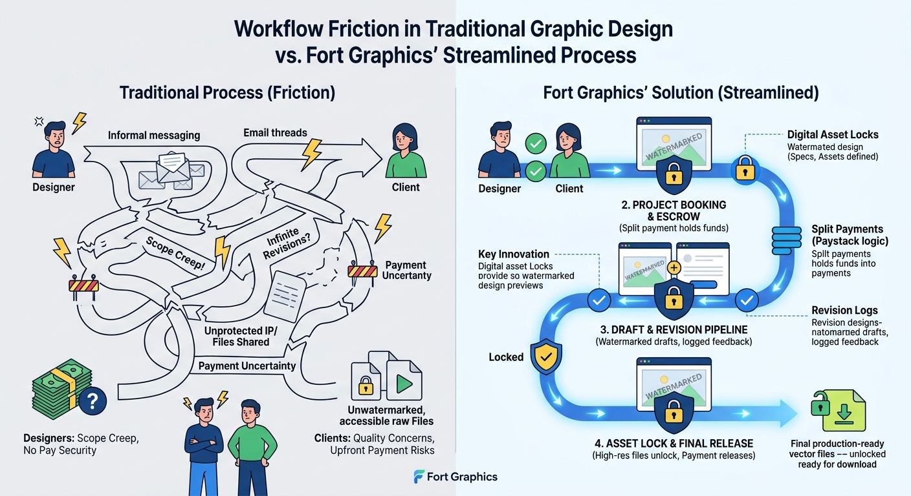
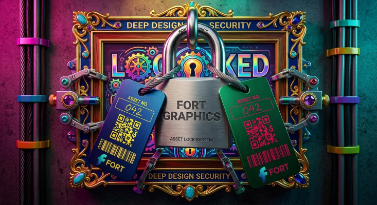

Graphics
High-Performance 2D Canvas & WebGL Rendering
Hardware-accelerated web dynamic graphic rendering architectures.
Read Full Article →Comprehensive System Architecture & Creative Marketplace Framework
Digital creative marketplaces often struggle to strike a balance between creative freedom, project security, and transactional trust. Graphic designers frequently contend with scope creep, unpaid work, and lengthy approval cycles, while clients worry about missing deadlines, unsatisfactory quality, or paying upfront without guaranteed deliverables. Modern web technologies—leveraging client-side authentication, real-time application states, secure transaction frameworks, and systematic workflow isolation—redefine these partnerships. Platforms like Fort Graphics introduce digital asset locks, split-payment architectures, and structured design revision pipelines that protect intellectual property while establishing seamless, transparent design workflows.
The modern digital creative ecosystem demands robust operational paradigms. As graphic design transitions from isolated desktop publishing into web-first collaborative environments, software platforms must act as impartial facilitators. When designers produce high-impact vector artwork, brand identities, typography frameworks, or digital advertisements, the underlying architecture must safeguard both human effort and financial capital. Fort Graphics addresses these requirements by building an infrastructure where every interaction—from brief creation to final vector delivery—is governed by precise logic routines and deterministic user states.
Traditional freelance design exchanges often lack structural predictability. In unmanaged environments, client-designer interactions rely on informal communications across messaging applications, unencrypted email chains, and manual payment tracking. These fragmented channels introduce substantial friction points that degrade professional relationships and create severe financial vulnerabilities:

Fort Graphics resolves operational friction by structuring every step of the design lifecycle into automated system states. By combining dynamic user interfaces with real-time state management, the platform transforms creative exchanges into secure, predictable workflows. The architecture replaces subjective negotiations with clear state transitions, guaranteeing that payment flows, asset availability, and review loops execute according to verified system conditions.
+-----------------------------------------------------------------+
| 1. BRIEF SUBMISSION & LOCK |
| Client submits design prompt, dimensions, and project assets |
+-----------------------------------------------------------------+
|
v
+-----------------------------------------------------------------+
| 2. PROJECT BOOKING & ESCROW |
| Designer books project; split payment holds escrow funds |
+-----------------------------------------------------------------+
|
v
+-----------------------------------------------------------------+
| 3. DRAFT & REVISION PIPELINE |
| Designer uploads watermarked drafts; client logs feedback notes |
+-----------------------------------------------------------------+
|
v
+-----------------------------------------------------------------+
| 4. ASSET LOCK & FINAL RELEASE |
| Client approves design -> Payment splits -> High-res unlocks |
+-----------------------------------------------------------------+
To eliminate operational risk for creators and clients, Fort Graphics implements dedicated technical subsystems engineered around safety, transparency, and computational efficiency. The table below highlights the platform's core architectural innovations:
| Innovation Feature | System Implementation | Impact on Workflow |
|---|---|---|
| Digital Asset Locks | Encrypted memory storage & gated preview modals | Prevents unauthorized downloads of unreleased raw design files. |
| Split Payments | Paystack automated split-payment escrow logic | Protects designer funds while reassuring clients before release. |
| Revision Pipelines | Dedicated feedback tracking logs & status hooks | Eliminates scope creep through clear, single-stream review cycles. |
| Role-Based Workspaces | Dynamic UI switches based on account authorization states | Isolates client, designer, and admin controls cleanly. |
| Automated Expiration Routines | 24-hour transient file cleanup background jobs | Enforces strict delivery windows and minimizes unnecessary server storage bloat. |

1. Brief Submission and Discovery
Projects start with client requirements logged directly into the system database. Clients define design specifications, output dimensions, brand colors, and asset attachments. The project remains visible on the public marketplace, allowing qualified commercial designers to review specs before committing to the task. This ensures full clarity before any work begins.
2. Escrow Protection and Project Booking
When a designer books an open project, the platform engages its payment synchronization routines. Utilizing split-payment gateways like Paystack, funds are securely allocated upon order confirmation. This guarantees designers that funds are reserved, while clients retain peace of mind knowing money will only be disbursed upon final project approval.
3. Structured Revision Loops
The designer produces low-resolution or watermarked draft previews within their active workspace. Clients review these iterations directly within gated modal views. Revisions are handled through formal feedback channels rather than informal, untracked messages, keeping iterations transparent, documented, and bound to the initial project brief. Each feedback entry generates an immutable record within the project workspace, ensuring that both parties maintain a shared understanding of requested alterations.
4. Asset Unlocking and Completion
Once the client approves the final revision, the system completes the transaction lifecycle:
By enforcing clear boundaries through code, Fort Graphics elevates graphic design from a volatile freelance transaction into a structured, enterprise-grade service. Creators gain financial stability, knowing their creative output cannot be stolen or weaponized. Clients gain structural predictability, knowing their funds remain protected until deliverables pass verification. Ultimately, software-driven accountability fosters longer commercial relationships, higher quality design outputs, and reduced operational overhead across the creative economy.
Furthermore, the architecture allows designers to manage multiple active briefs simultaneously without administrative confusion. Because project states, client feedback logs, asset previews, and balance disbursements are centralized, designers spend significantly less time performing manual administrative duties and more time focusing on high-value creative execution. Software engineering serves as the foundational backbone that makes scalable freelance enterprise possible.
Integrating modern web tools into design management bridges the gap between technical rigor and creative freedom. By automating project tracking, payment verification, and file delivery, platforms like Fort Graphics reduce administrative overhead. Designers focus on creative execution, clients receive high-quality assets on schedule, and both parties operate in a secure digital ecosystem. As digital platforms continue to evolve, the integration of real-time application states and automated financial locks will remain the standard for modern creative operations.
Hardware-accelerated web dynamic graphic rendering architectures.
Read Full Article →
A comprehensive guide on integrating automated split-payments, webhook signatures, and escrow holds for digital marketplaces.
Read Full Guide →